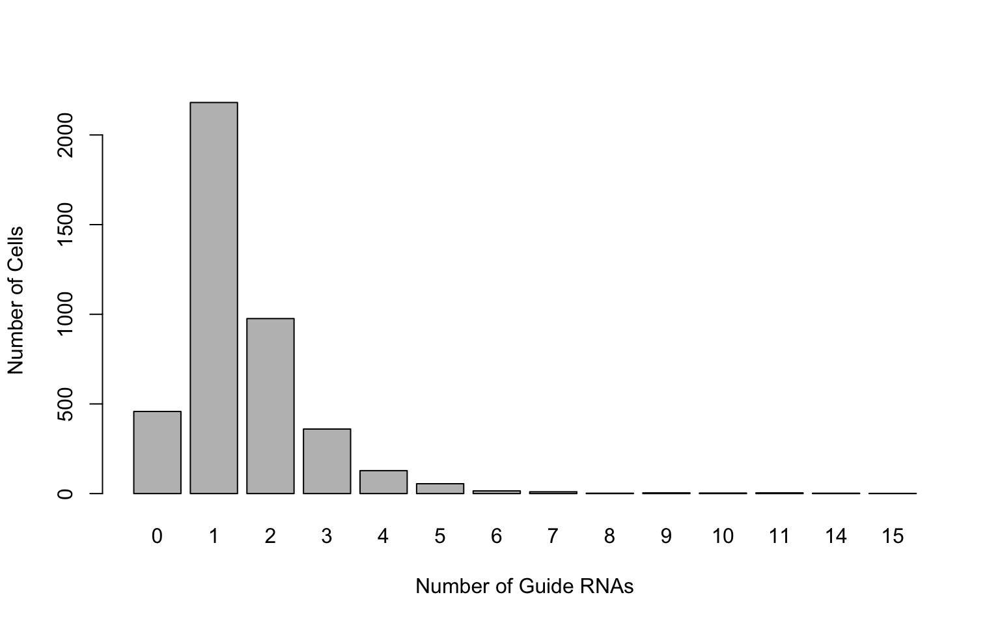
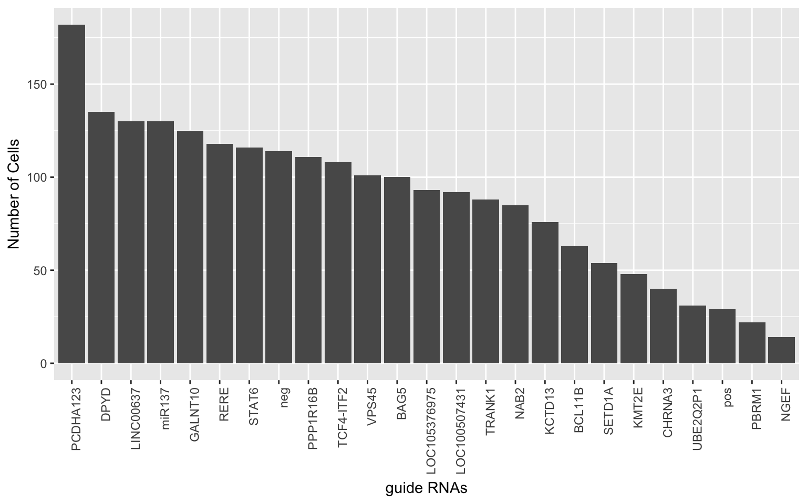

Last updated: 2018-11-29
workflowr checks: (Click a bullet for more information) ✖ R Markdown file: uncommitted changes
The R Markdown file has unstaged changes. To know which version of the R Markdown file created these results, you’ll want to first commit it to the Git repo. If you’re still working on the analysis, you can ignore this warning. When you’re finished, you can run wflow_publish to commit the R Markdown file and build the HTML.
✔ Environment: empty
Great job! The global environment was empty. Objects defined in the global environment can affect the analysis in your R Markdown file in unknown ways. For reproduciblity it’s best to always run the code in an empty environment.
✔ Seed:
set.seed(20181119)
The command set.seed(20181119) was run prior to running the code in the R Markdown file. Setting a seed ensures that any results that rely on randomness, e.g. subsampling or permutations, are reproducible.
✔ Session information: recorded
Great job! Recording the operating system, R version, and package versions is critical for reproducibility.
✔ Repository version: b5d096d
wflow_publish or wflow_git_commit). workflowr only checks the R Markdown file, but you know if there are other scripts or data files that it depends on. Below is the status of the Git repository when the results were generated:
Ignored files:
Ignored: .Rproj.user/
Unstaged changes:
Modified: analysis/crop_workflow_Alan.Rmd
I assume the following files are in the working directory
Load CellRanger and check version
module load cellranger
which cellrangerMy version is 2.1.1
We need to first make a special reference file for CellRanger. It uses the spiked reference genome and spiked GTF file
cd reference/
cellranger mkref --nthreads=1
--genome=cellranger_ref
--fasta=hg38_gRNA_spiked_11Jun2018.fa
--genes=gencode_gRNA_spiked_filtered_11Jul2018.gtf
cd ..Now we are ready to make our count matrix. We run cellranger count on both datasets. I expect 2000 cells based on what the experimentalists told me. These commands will use all available cores.
cellranger count --id=NSC0507_CR
--transcriptome=reference/cellranger_ref
--fastqs=NSC0507//fastq/
--expect-cells=2000
cellranger count --id=NSC08_CR
--transcriptome=reference/cellranger_ref
--fastqs=NSC08/fastq/
--expect-cells=2000This command will generateo two new cellranger directories with the id as the filename. The output details can be found at the bottom of this page. The keu file is the filtered_gene_bc_matrices.h5. The filtered here means that only cells with detected barcodes are included.
Unfortunately, all of matrices are in either MEX or HDF5 format. We can use the following command to get a CSV file:
cellranger mat2csv NSC0507_CR/outs/filtered_gene_bc_matrices_h5.h5 NSC0507.csv
cellranger mat2csv NSC08_CR/outs/filtered_gene_bc_matrices_h5.h5 NSC08.csvI assume that the following are in the parent directory:
Now we have the count matrices and we can move on to R.
library(data.table)
nsc0507 <- data.frame(fread('/Volumes/CROP-seq/cellranger_from_Alan/NSC0507.csv',sep=','),row.names=1)
Read 33.4% of 29922 rows
Read 29922 rows and 2100 (of 2100) columns from 0.119 GB file in 00:00:05colnames(nsc0507) = paste(colnames(nsc0507),'0507') #prevent overlapping barcodes
nsc08 <- data.frame(fread('/Volumes/CROP-seq/cellranger_from_Alan/NSC08.csv',sep=','),row.names=1)
Read 33.4% of 29922 rows
Read 29922 rows and 2101 (of 2101) columns from 0.119 GB file in 00:00:04colnames(nsc08) = paste(colnames(nsc08),'08') #prevent overlapping barcodesCombine into one matrix and remove genes found
comb = cbind(nsc08, nsc0507)Load list of guide RNAs and subset the combined expression matrix
gRNAs = readLines('/Volumes/CROP-seq/cellranger_from_Alan/gRNAs.txt')
gRNA.dge = comb[gRNAs,]Frequency distribution of guide RNAs:
barplot(table(colSums(gRNA.dge>0)),xlab='Number of Guide RNAs',ylab='Number of Cells')
| Version | Author | Date |
|---|---|---|
| 6360503 | simingz | 2018-11-20 |
We would like to collapse expression data of guide RNAs from the same locus.
library(dplyr)
gRNA.dge$label = sapply(strsplit(gRNAs,split = '_'), function(x){x[1]})
gRNA.dge.col = as.data.frame(gRNA.dge %>% group_by(label) %>% summarise_all(funs(sum)))
row.names(gRNA.dge.col) = gRNA.dge.col$label
gRNAs.col = rownames(gRNA.dge.col)
gRNA.dge.col$label = NULL
#Controls (cells without any gRNAs)
ctrls = colnames(comb)[which(colSums(gRNA.dge.col)==0)]
#Singletons (cells with only 1 gRNA)
singles = colnames(comb)[which(colSums(gRNA.dge.col>0)==1)]
grna.det.rate = rowSums(gRNA.dge.col[,singles]>0)
order.grna = gRNAs.col[order(grna.det.rate,decreasing = T)]
grna.det.df = data.frame(det=grna.det.rate, gRNAs=factor(gRNAs.col, levels = order.grna))
library(ggplot2)
ggplot(grna.det.df, aes(x=gRNAs, y=det)) + geom_bar(stat="identity") + theme(axis.text.x = element_text(angle = 90, hjust = 1)) +
xlab('guide RNAs') + ylab('Number of Cells')
| Version | Author | Date |
|---|---|---|
| 6360503 | simingz | 2018-11-20 |
This paper shows that DESeq2 has one of the lowest false positive rates for UMI data. We use this to perform our differential expression analysis.
Install DESeq2
source("https://bioconductor.org/biocLite.R")
biocLite("DESeq2")We use DESeq2 on cells that have/dont have the top guide RNA, which is VPS45_2
library(DESeq2)
g = order.grna[1]
g.only.cells = singles[which(gRNA.dge[g,singles] > 0)]
#We only test the expression among the top expressed genes
comb.filt = comb[rowSums(comb>0)>1000,]
sampleType = factor(c(rep('G',length(g.only.cells)),rep('N',length(ctrls))),levels = c('N','G'))
dds = DESeqDataSetFromMatrix(countData = comb.filt[,c(g.only.cells, ctrls)],
colData = data.frame(row.names = c(g.only.cells, ctrls), sampleType=sampleType),
design = ~sampleType) # we're testing for the different condidtions
dds = estimateSizeFactors(dds)
dds = DESeq(dds)
res = results(dds)
# At FDR of 10%
resSig <- subset(res, padj < 0.1)
dim(resSig)[1]
write.table(resSig,paste(g,'_DESeq2_FD10.1.txt'),sep='\t',quote=F,row.names = T,col.names = T)
upReg = resSig[resSig$log2FoldChange>0,]
downReg = resSig[resSig$log2FoldChange<0,]
mean(upReg$log2FoldChange)
mean(downReg$log2FoldChange)I set eval=FALSE above because it can take several minutes to perform the expression analysis.
sessionInfo()R version 3.3.2 (2016-10-31)
Platform: x86_64-apple-darwin11.4.2 (64-bit)
Running under: OS X El Capitan 10.11.6
locale:
[1] en_US.UTF-8/en_US.UTF-8/en_US.UTF-8/C/en_US.UTF-8/en_US.UTF-8
attached base packages:
[1] stats graphics grDevices utils datasets methods base
other attached packages:
[1] ggplot2_2.2.1 dplyr_0.7.5 data.table_1.10.4
loaded via a namespace (and not attached):
[1] Rcpp_0.12.17 knitr_1.20 bindr_0.1.1
[4] whisker_0.3-2 magrittr_1.5 workflowr_1.1.1
[7] munsell_0.4.3 tidyselect_0.2.4 colorspace_1.3-1
[10] R6_2.2.2 rlang_0.2.1 plyr_1.8.4
[13] stringr_1.2.0 tools_3.3.2 grid_3.3.2
[16] gtable_0.2.0 R.oo_1.22.0 git2r_0.18.0
[19] htmltools_0.3.6 lazyeval_0.2.0 yaml_2.1.16
[22] rprojroot_1.2 digest_0.6.12 assertthat_0.2.0
[25] tibble_1.4.2 bindrcpp_0.2.2 purrr_0.2.5
[28] R.utils_2.7.0 glue_1.2.0 evaluate_0.10
[31] rmarkdown_1.10 labeling_0.3 stringi_1.1.5
[34] pillar_1.2.3 scales_0.5.0 backports_1.0.5
[37] R.methodsS3_1.7.1 pkgconfig_2.0.1 This reproducible R Markdown analysis was created with workflowr 1.1.1